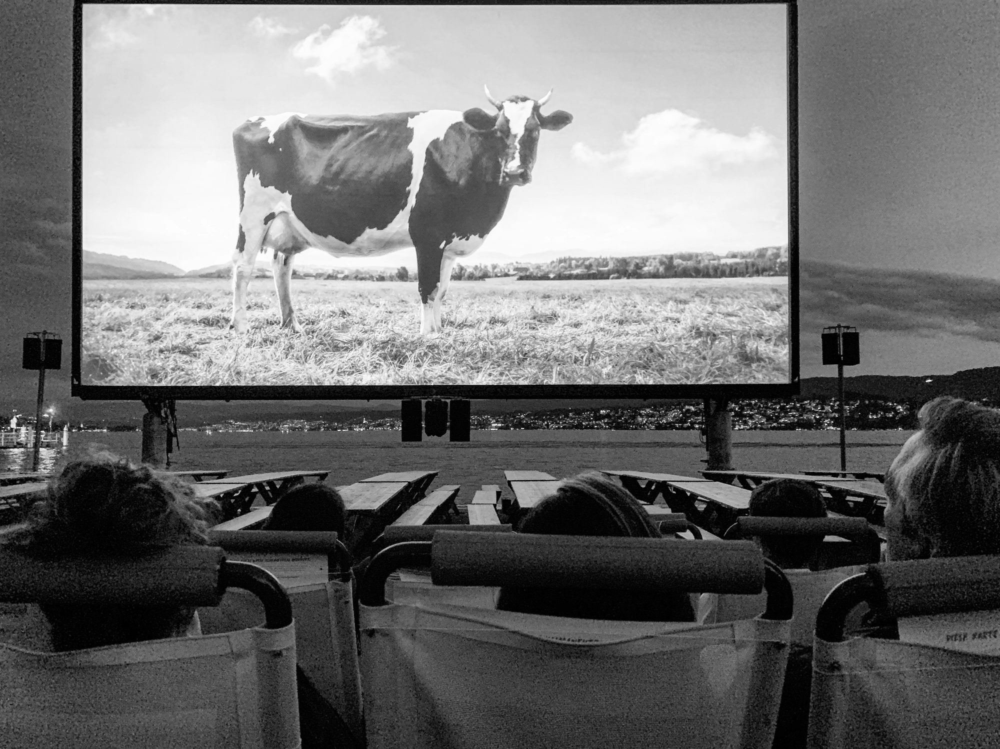

Exploring Cinematic Diversity: A Journey Through Movie Formats
This article delves into the various cinema formats available today, examining how each enhances the movie-watching experience and caters to diverse audiences.
2025-05-03
Sofia Ramirez